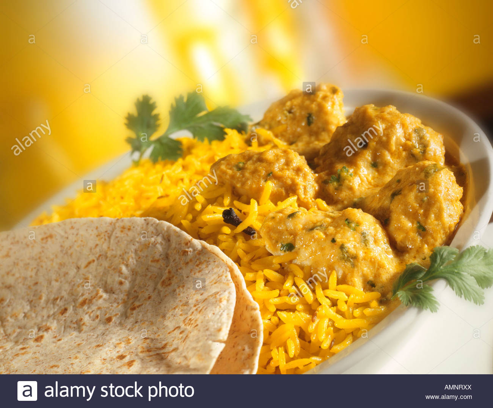
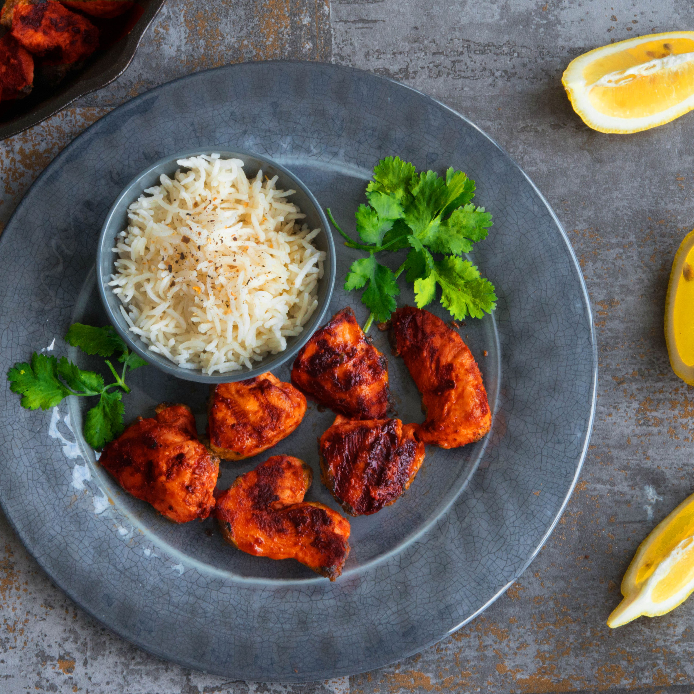

Special recipes
Every chef is expert on some Special recipes! They make the recipes more delicious with an extra layer of the magical experience! I have listed below Three of my special recipes item!

Traditional Kacci
Kacci is a delicious food for the people who are not vegetarian. And as it's one of my favourite recipe too, i mastered it with so many experiment!

Kurma Polau
Kacci is a delicious food for the people who are not vegetarian. And as it's one of my favourite recipe too, i mastered it with so many experiment!

Chicken Tanduri
Kacci is a delicious food for the people who are not vegetarian. And as it's one of my favourite recipe too, i mastered it with so many experiment!